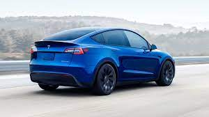
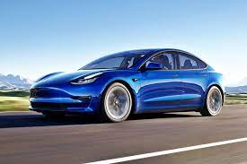
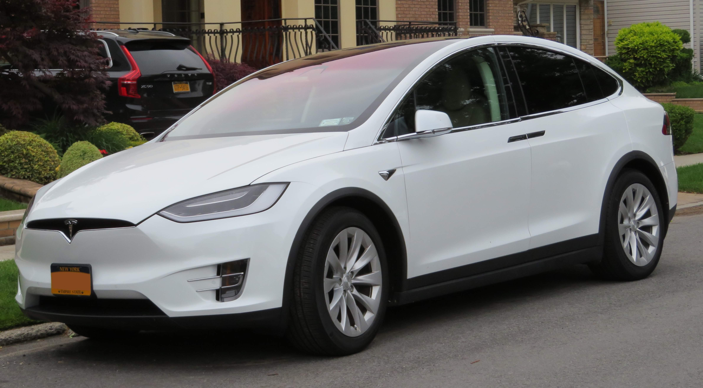

Auta
Spis treści
1. Model Y
2. Model 3
3. Model S
4. Model X

Tesla Model Y mierzy 475,1 cm długości, 192,1 cm szerokości (212,9 cm z lusterkami) i 162,4 cm wysokości. Jej rozstaw osi to 289,0 cm. Maksymalna pojemność bagażnika wynosi 2158 litrów.
Tesla Model Y jest dostępna w dwóch wersjach silnikowych. Obie mają napęd na wszystkie koła.
Model Y Long Range z dwoma silnikami, przyspieszenie 0-100 km/h: 5,0 s, prędkość maksymalna: 217 km/h, zasięg: 507 km.
Model Y Performance z dwoma silnikami, przyspieszenie 0-100 km/h: 3,7 s, prędkość maksymalna: 250 km/h, zasięg: 480 km.

Tesla Model 3 mierzy 469,4 cm długości, 185,0 cm szerokości (208,9 cm z lusterkami) i 144,3 cm wysokości. Jej rozstaw osi to 287,5 cm. Bazowa pojemność tylnego bagażnika wynosi 649 litrów.
Tesla Model 3 występuje w trzech wersjach silnikowych. Podstawowy wariant jest tylnonapędowy, a odmiany Long Range i Performance mają napęd na wszystkie koła.
Model 3 z jednym silnikiem i tylnym napędem, przyspieszenie 0-100 km/h: 6,1 s, prędkość maksymalna: 225 km/h, zasięg: 491 km.
Model 3 Long Range z dwoma silnikami i napędem na wszystkie koła, przyspieszenie 0-100 km/h: 4,4 s, prędkość maksymalna: 233 km/h, zasięg: 614 km.
Model 3 Performance z dwoma silnikami i napędem na wszystkie koła, przyspieszenie 0-100 km/h: 3,3 s, prędkość maksymalna: 261 km/h, zasięg: 547 km.

Tesla Model S mierzy 497,0 cm długości, 196,4 cm szerokości (218,7 cm z lusterkami) i 144,5 cm wysokości. Jej rozstaw osi to 296,0 cm. Bazowa pojemność tylnego bagażnika wynosi 793 litry.
Tesla Model S jest dostępna w dwóch wersjach silnikowych. Obie mają napęd na wszystkie koła.
Model S (670 KM) z dwoma silnikami, przyspieszenie 0-100 km/h: 3,2 s, prędkość maksymalna: 250 km/h, zasięg: 652 km.
Model S Plaid (1020 KM) z trzema silnikami, przyspieszenie 0-100 km/h: 2,1 s, prędkość maksymalna: 322 km/h, zasięg: 637 km.

Tesla Model X mierzy 503,6 cm długości, 199,9 cm szerokości (227,1 cm z lusterkami) i 168,4 cm wysokości. Jej rozstaw osi to 296,5 cm. Bazowa pojemność tylnego bagażnika w wersji 5-osobowej wynosi 1145 litrów, a w wersji 7-osobowej – 544 l.
Tesla Model X jest dostępna w dwóch wersjach silnikowych. Obie mają napęd na wszystkie koła.
Model X (670 KM) z dwoma silnikami, przyspieszenie 0-100 km/h: 3,9 s, prędkość maksymalna: 250 km/h, zasięg: 560 km.
Model X Plaid (1020 KM) z trzema silnikami, przyspieszenie 0-100 km/h: 2,6 s, prędkość maksymalna: 262 km/h, zasięg: 536 km.